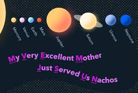
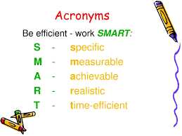
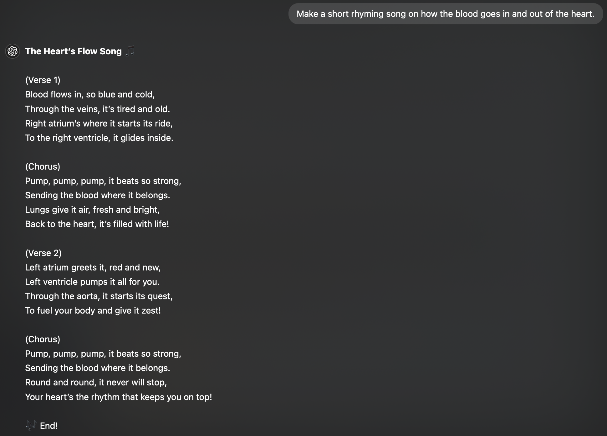
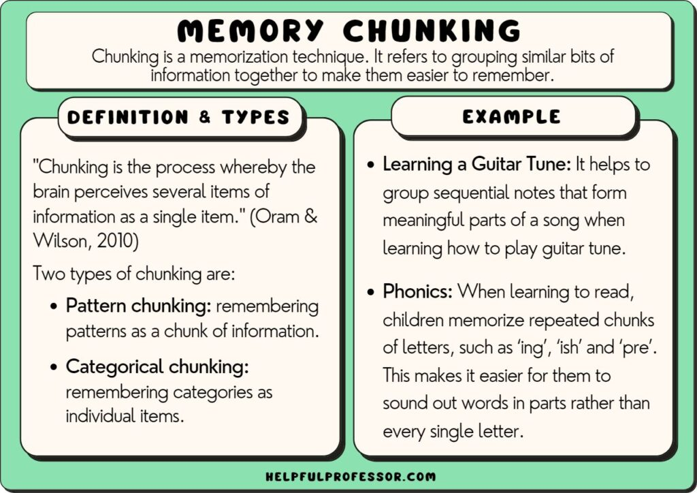

Memorizing content-heavy subjects can feel overwhelming, but with the right strategies, it becomes manageable and even enjoyable. This page provides tips and techniques to help you remember large amounts of information effectively. Whether it’s history, science, or any other subject packed with ALOT of facts, you’ll discover methods that make studying smarter, not harder.
Mnenomics are great to memorize information! This requires you to create a new word or group of words by taking the first letter of each word and putting them together. There are many types of mnenomics, but these two are the best ones - Acronyms and Acorstic. An acronym is a word that is made up by taking the first letters of all the key words or ideas you need to remember and creating a new word out of them. Example: The word "HOMES" to remember the names of the Great Lakes: Huron, Ontario, Michigan, Erie, and Superior. Now, acorstic mnenomics are making up a sentence in which the first letter of each word is part of or represents the initial of what you want to remember or memorize. For example: "MY DEAR AUNT SALLY" This sentence represents the order of operations in math: multiply, divide, add, subtract. Pro Tip: The weirder the mnenomic, the more you'll be able to remember it. These are some more examples:
 Do you remember your favourite song line by line? Because most songs are rhyming and have a nice beat to it, so it's easy to remember them. But what if we convert our chapters into songs? Yes! That is possible, making your information in songs which you can memorize in a blink of an eye. These take advantage of catchy beats and patterns created by ending each line with a rhyme to help you retain information. But, everyone can't write out songs, and rhyming words don't even come naturally to us. That's why you can use AI, like Chat-GPT to make songs for you! See the image below!
The chunking method is a learning technique that breaks down large amounts of information into smaller, more manageable chunks. This technique can help you learn and remember more information, and it can also help you improve your problem-solving skills. It is helpful because there is less memory load for your brain. And you even use when memorizing phone numbers! Such as remembering a 10-digit phone number by breaking it down into three sets of numbers: 555-867-5309.
